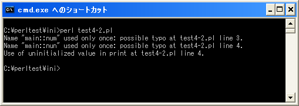
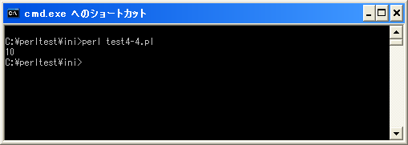

- Home ›
- Perl入門 ›
- プログラムの基本構成
厳密な構文チェック
Perlでプログラムを記述する上でプログラムの先頭に記述しておいたほうがいい2つの文があります。
use strict; use warnings;
この2つの文を追加することで厳密な構文チェックと警告表示が行われるようになります。
use warnings
「use warnings」を記述するとより詳細な警告を出力してくれます。簡単な例で試してみます。
$num = 10; print $nun;
上記を「test4-1.pl」の名前で保存します。そしてコマンドプロンプトを起動し、プログラムを保存したディレクトリに移動してから次のように実行して下さい。
何も出力されていません。これは変数「num」の値を出力しようとしたのに間違って変数「nun」の値を出力しようとした為です。これは記述ミスなのですがPerlでは何事もないように実行してしまいます。
そこで「use warnings」を記述すると警告が表示されるようになります。簡単な例で試してみます。
use warnings; $num = 10; print $nun;
上記を「test4-2.pl」の名前で保存します。そしてコマンドプロンプトを起動し、プログラムを保存したディレクトリに移動してから次のように実行して下さい。

今度は3つの行が表示されています。これは変数「num」が一度しか使われていないこと、変数「nun」が一度しか使われていないこと、そして初期化されていない値を使用しようとしていることを警告してくれています。このように警告を表示することで、プログラムミスを発見するのに役立ちます。
use strict
次に「use strict」を記述するとより厳密にPerlの文法をチェックしてくれるようになります。例えば変数を利用する前に宣言を行わなければならなくなります。こちらも簡単な例で試してみます。
use strict; use warnings; $num = 10; print $num;
上記を「test4-3.pl」の名前で保存します。そしてコマンドプロンプトを起動し、プログラムを保存したディレクトリに移動してから次のように実行して下さい。
エラーが表示されます。詳細な意味は省略しますが、グローバル変数をパッケージ名無しで利用しようとする時に表示されるエラーです。変数の前に「my」を付けることによりローカル変数とすることでエラーは表示されなくなります。
use strict; use warnings; my $num = 10; print $num;
上記を「test4-4.pl」の名前で保存します。そしてコマンドプロンプトを起動し、プログラムを保存したディレクトリに移動してから次のように実行して下さい。

今度はエラーも警告もなくプログラムが実行されました。
「use strict」や「use warnings」は必須ではありませんが、ミスの無いプログラムを作成するためにもプログラムの先頭に記述するようにして下さい。
( Written by Tatsuo Ikura )

著者 / TATSUO IKURA
初心者～中級者の方を対象としたプログラミング方法や開発環境の構築の解説を行うサイトの運営を行っています。